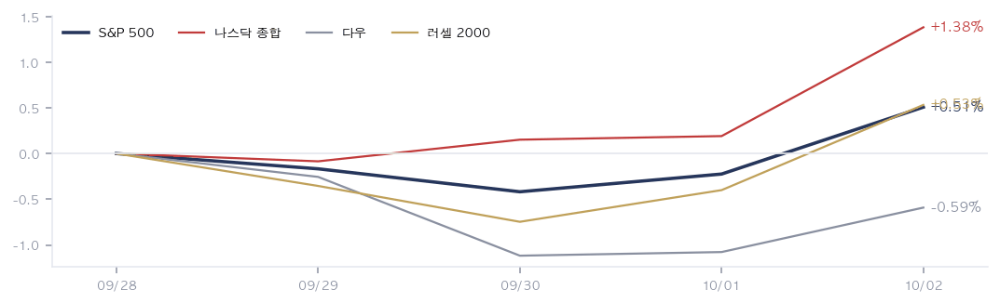
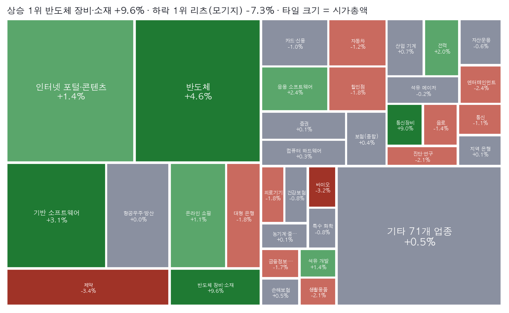
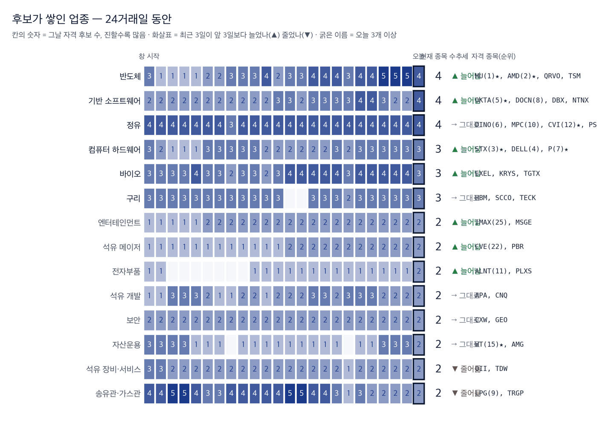

|
ZekiRex™ Apex US 주간 결산 9/28~10/2
시장이 한 주 동안 한 일 · 1/3
데이터 기준 10/2 종가 |
ZekiRex™ |
|
|
| 저희가 정한 규칙이 고른 종목과 그 성적을 매일 그대로 싣습니다. 맞았든 틀렸든 지우지 않습니다. |
한 주를 한 문장으로. 금리가 주중에 시장을 누르다가 금요일 고용 보고서가 그 짐을 덜어 준 한 주입니다. 미 국채 10년물 금리는 10/1 장중 5.33%를 넘어 2002년 이후 최고를 찍었습니다. 10/2 발표된 9월 고용은 2만9천 명 늘어 예상의 3분의 1에 그쳤습니다. 실업률은 4.2%로 올랐습니다. 연준이 이달 다시 올릴 것이라는 기대가 줄었고, 나스닥 100은 사상 최고로 마쳤습니다. 한 주 동안 S&P 500은 0.51%, 나스닥 종합은 1.38% 올랐습니다. 다우는 0.59% 내렸습니다. 오른 쪽은 반도체 장비와 광통신 장비이고, 내린 쪽은 금리에 기대는 모기지 리츠입니다. |
| 이번 주 반드시 알아야 할 5가지 | 한 주에 일어난 일 가운데 돈에 영향을 준 것만 5가지입니다. 각 항목은 사실, 왜 그런가, 그래서 무엇인가 순입니다. | 1 | 10년물, 2002년 이후 최고 돌파 사실 미 국채 10년물 금리는 10/1 장중 5.33%를 넘었습니다. 한 주로는 0.04%포인트 올라 5.28%로 마쳤습니다. 미 국채는 3분기에 1994년 이후 가장 나쁜 분기를 보냈습니다. (월스트리트저널·유로뉴스) 왜 금리가 오른 주에 유가도 함께 높았습니다. 영국 30년물도 6%에 닿아 1998년 이후 최고였습니다. 미국만의 일이 아니라 선진국 국채 전반이 팔린 것입니다. (가디언) 행동 — 빚이 많은 회사나 금리에 값이 묶인 종목을 들고 계시다면 금요일 하락을 방향 전환으로 읽기는 이릅니다. 고용이 약해도 10년물은 5%대에 머물렀습니다. 금리 부담은 그대로입니다. | | 2 | 9월 고용 29,000명… 10월 인상 기대 후퇴 사실 9월 비농업 고용은 29,000명 늘었습니다. 시장 예상은 84,000~90,000명이었습니다. 실업률은 4.2%로 올랐고 앞선 두 달 수치도 낮춰졌습니다. (블룸버그·CNBC) 왜 연준은 9월에 금리를 올렸고 시장은 10월 연속 인상을 걱정했습니다. 약한 고용이 그 걱정을 덜었습니다. 금요일 달러는 한 달 사이 가장 나쁜 하루를 보냈습니다. (블룸버그) 행동 — 금리 인상이 멈추면 성장주에는 숨통이 트입니다. 다만 고용이 약하다는 것은 소비가 약해진다는 뜻이기도 합니다. 9/29 소비자신뢰지수는 81.9로 2014년 이후 가장 낮았습니다. (CNBC) 두 해석 가운데 어느 쪽이 맞는지는 아직 정해지지 않았습니다. | | 3 | 반도체 장비·광통신 장비, 한 주 주도 사실 반도체 장비 업종은 9.59%, 통신 장비 업종은 8.99% 올라 105개 업종 가운데 1·2위입니다. 어플라이드옵토일렉트로닉스가 19.39%, 코히런트가 19.33%, 루멘텀이 17.81% 올랐습니다. 왜 엔비디아는 자사주 매입 한도를 1,500억 달러 늘렸습니다. 사상 최대입니다. (월스트리트저널·뉴욕타임스) 마이크론은 데이터센터 매출이 11배로 늘었다고 밝혔습니다. (CNBC) 인공지능 설비를 짓는 데 드는 부품이 함께 올랐습니다. 행동 — 마이크론 주가는 좋은 실적에도 다음 날 내렸습니다. 기대가 이미 값에 들어 있다는 신호입니다. 이 테마를 들고 계시다면 좋은 숫자가 나와도 주가가 오르지 않는 날이 늘어나는지를 보십시오. | | 4 | 금리 민감 업종·대형 제약 약세 사실 모기지 리츠 업종은 7.28% 내려 105개 업종 가운데 꼴찌입니다. 대형 제약 업종은 3.36%, 바이오 업종은 3.21% 내렸습니다. 페어아이작은 21.36% 하락했습니다. 왜 모기지 리츠는 빌린 돈으로 주택담보채권을 들고 있어 장기 금리가 오르면 바로 손실이 납니다. 페어아이작은 미 연방주택금융청이 신용점수 가격 체계를 바꾸겠다고 하자 독점이 약해진다는 우려로 팔렸습니다. (이데일리·CNBC) 행동 — 배당을 보고 모기지 리츠를 들고 계시다면 배당률보다 장기 금리를 먼저 보셔야 합니다. 금리가 5%대에 머무는 동안 이 업종의 손실은 이어질 수 있습니다. | | 5 | 보유 3종목 모두 상승… 계좌는 지수 사이 사실 마라톤페트롤리엄이 8.45%, 헤치에프싱클레어가 6.75%, 델테크놀로지스가 3.51% 올랐습니다. 계좌는 1.20%로 마쳤습니다. 왜 정유 업종은 5.96% 올라 업종 순위 4위입니다. 계좌는 현금 비중이 커서 종목 상승의 일부만 계좌에 실렸습니다. 그래서 S&P 500보다는 앞서고 QQQ보다는 뒤졌습니다. 행동 — 정유 2종목은 같은 방향으로 움직입니다. 10/2 주요 7개국이 경유와 원유 비축분 1억 배럴을 풀기로 했습니다. 경유값이 내리면 정제마진이 줄어 두 종목이 함께 내릴 수 있습니다. |
|
| 한 주 결산 | | 지표 | 금요일 종가 | 주간 | 연초 이후 | | S&P 500 | 7,723 | +0.51% | +12.60% | | 나스닥 종합 | 27,191 | +1.38% | +17.02% | | 다우 | 51,177 | -0.59% | +5.78% | | 러셀 2000 | 2,833 | +0.53% | +12.94% | | 비트코인 | $84,505 | +1.26% | -4.77% | | 달러인덱스 | 101.9 | +0.72% | +3.57% | | 미 국채 10년 | 5.28% | +0.04%p | +1.09%p | | WTI 원유 | $91.1 | -1.61% | +58.95% | | 금 | $4,162 | -0.15% | -3.86% |
표의 주간 등락은 뉴욕 9/28 종가에서 뉴욕 10/2 종가까지 5거래일입니다. 연초 이후 열은 같은 종가 시리즈로 잰 값입니다. 지수 4개 가운데 다우만 내렸습니다. 기술주 비중이 큰 나스닥 종합이 1.38%로 4개 가운데 1위입니다. 달러인덱스는 0.72% 올라 101.9입니다. 금요일 하락도 주중 상승을 다 지우지는 못했습니다. 서부텍사스산원유는 1.61% 내려 91.1달러입니다. 비트코인은 1.26% 올라 84,505달러이지만 연초보다는 아래에 있습니다. |
주간 지수 궤적  5개 선은 뉴욕 9/28 종가를 100으로 놓은 지수 4개와 비트코인의 경로입니다. 주 중반 10년물이 오를 때 선들이 함께 눌렸다가, 금요일 고용 보고서 뒤에 함께 고개를 들었습니다. 다우만 출발선 아래에서 마쳤습니다. 이번 주 방향은 기업이 아니라 금리가 정했다는 뜻입니다. 다음 주도 금리부터 봐야 합니다. |
업종 히트맵 — 한 주의 상승·하락 지도  타일 크기는 업종의 시가총액이고 초록은 상승, 붉음은 하락입니다. 1위는 반도체 장비이고, 가장 큰 칸인 반도체는 4.61% 올랐습니다. 저희가 보는 종목 평균은 0.36%입니다. 큰 칸이 올라 지수가 평균보다 더 올랐다는 뜻입니다. 다음 매수 후보도 이 뜨거운 칸에서 나옵니다. |
| 한 주 움직인 것 | 주간 전체를 거래한 1,032종목 기준 · 따라가는 종목 1,039개 그 주 오른 종목 | AAOI AAOI | +19.39% | | COHR COHR | +19.33% | | LITE LITE | +17.81% | | SNPS SNPS | +17.31% | | CCL CCL | +16.35% | | MTSI MTSI | +15.45% | | VIAV VIAV | +15.24% | | RCL RCL | +14.49% | | MAT MAT | +14.47% | | ACN ACN | +14.00% |
| 그 주 내린 종목 | FICO FICO | -21.36% | | CBRS CBRS | -15.41% | | ALNY ALNY | -13.96% | | APP APP | -12.98% | | DKNG DKNG | -12.15% | | CAI CAI | -10.87% | | TEM TEM | -9.93% | | VKTX VKTX | -9.36% | | NLY NLY | -9.09% | | STWD STWD | -8.87% |
|
상하위는 뉴욕 9/28~10/2 종가 기준이며 닷새를 다 거래한 종목만 넣었습니다. 오른 쪽에는 어플라이드옵토일렉트로닉스, 코히런트, 루멘텀, 매콤, 바이아비처럼 광통신 부품이 몰려 있습니다. 카니발은 16.35%, 로열캐리비언은 14.49% 올랐습니다. 카니발이 연간 전망을 올렸기 때문입니다. (블룸버그) 내린 쪽에는 페어아이작, 세레브라스, 앱러빈이 있습니다. 세레브라스는 보호예수가 풀리며 상장 뒤 최저가로 내렸습니다. (CNBC) |
|
|
우리가 한 일 · 2/3
데이터 기준 10/2 종가 |
ZekiRex™ |
|
|
| Rex US Best 의 한 주 | Rex US Best 의 이번 주 (9/28→10/01) | Rex US Best | +1.20% | | 기준 | | S&P 500 | −0.21% | | +1.41%p | | 나스닥 100 | +0.75% | | +0.46%p |
뉴욕 9/28 종가에서 뉴욕 10/01 종가까지입니다. 비용을 뺀 값입니다. Rex US Best — 지수 출범(뉴욕 9/11 종가) 이후 | Rex US Best | +0.95% | | 기준 | | S&P 500 | +0.21% | | +0.74%p | | 나스닥 100 | +3.91% | | −2.96%p |
12거래일입니다. 비용을 뺀 값입니다. 25종목 가운데 가장 많이 오른 3개와 가장 많이 내린 3개입니다. 뉴욕 9/25 종가에서 뉴욕 10/02 종가까지입니다. 가장 많이 오른 3개 | Materion Corporation MTRN | +17.81% | | Everpure, Inc. P | +11.22% | | Okta, Inc. OKTA | +8.35% |
| 가장 많이 내린 3개 | Seagate Technology Holdings… STX | −7.40% | | Imax Corporation IMAX | −5.94% | | Centerra Gold Inc. CGAU | −5.01% |
|
· 이번 주 새로 들어온 종목은 DigitalOcean Holdings DOCN, Keysight Technologies KEYS입니다. · 빠진 종목은 Arcelor Mittal NY Registry Shares NEW MT, Oceaneering International OII입니다. · 52주 최고가 자리에 있는 종목은 Allient Inc. ALNT입니다. · 마지막 거래일 거래량이 평소의 두 배를 넘었습니다 — 내리며 Seagate Technology Holdings PLC STX −10.2%. |
| 보유 종목의 한 주 | | 종목 | 금요일 종가 | 주간 | 평가손익 | 손절가 | 손절까지 여유 | 일정 | MPC
MPC | $422.33 | +8.45% | +17.27% | $331.32 | +27.5% | 11/3 실적 | DINO
DINO | $113.36 | +6.75% | +18.42% | $88.07 | +28.7% | 10/28 실적 | DELL
DELL | $562.52 | +3.51% | +28.92% | $401.41 | +40.1% | 11/27 실적 |
계좌의 이번 주 | 계좌 | +1.20% | | 기준 | | S&P 500 | +0.51% | | +0.69%p | | QQQ | +1.77% | | −0.57%p |
오른쪽은 계좌에서 그 지수를 뺀 값입니다 — 플러스면 앞섰고 마이너스면 뒤졌습니다. 기록 시작(8/11) 이후 — 한 주보다 이쪽이 중요 | 계좌 | +6.67% | | 기준 | | S&P 500 | −0.57% | | +7.24%p | | QQQ | +2.82% | | +3.85%p |
8/11부터 9/29까지, 34거래일입니다. 보유 3종목이 모두 올라 계좌는 이번 주 1.20%로 마쳤습니다. 정유 2종목이 앞섰고 델테크놀로지스가 뒤를 이었습니다. 3종목 모두 취득가보다 위에 있습니다. 손절가까지 가장 가까운 것은 마라톤페트롤리엄이며 27.47%가 남았습니다. 3종목의 다음 실적은 헤치에프싱클레어 10/28이 가장 이릅니다. 매도 규칙은 그대로입니다. |
대기 명단 — 규칙이 다음에 사는 순서 | 순서 | 종목 | Zeki 강도 | 자격 지속 | 업종 | 고점 대비 |
|---|
| 1 | Micron Technology, Inc. MU | 98 | 24일째 | Semiconductors | -9.6% | | 2 | Advanced Micro Devices, Inc. AMD | 98 | 17일째 | Semiconductors | -2.4% | | 3 | Seagate Technology Holdings PLC STX | 98 | 6일째 | Computer Hardware | -13.6% | | 4 | Okta, Inc. OKTA | 97 | 24일째 | Software - Infrastructure | +0.0% | | 5 | Everpure, Inc. P | 96 | 19일째 | Computer Hardware | +0.0% | | 6 | CVR Energy Inc. CVI | 94 | 24일째 | Oil & Gas Refining & Marketing | +0.0% | | 7 | The Chefs' Warehouse, Inc. CHEF | 93 | 24일째 | Food Distribution | -2.6% | | 8 | Materion Corporation MTRN | 93 | 24일째 | Other Industrial Metals & Mining | -4.1% | | 9 | WisdomTree, Inc. WT | 93 | 6일째 | Asset Management | -4.0% | | 10 | Phillips 66 PSX | 93 | 16일째 | Oil & Gas Refining & Marketing | -3.6% |
저희 규칙은 자리가 비면 이 순서로 삽니다 — Zeki 강도가 높은 순, 같으면 값이 덜 흔들리는 순. 추천이 아니라 대기 순서의 서술입니다. 「아직 잡음」은 자격 1~2일째입니다. 후보가 쌓인 업종 (2026-10-01 종가)  이 그림 읽는 법 | 한 줄 | 한 업종의 하루하루입니다. 왼쪽이 창 시작, 오른쪽 굵은 테두리가 오늘입니다. | | 칸의 숫자와 색 | 그날 저희 기준을 넘은 종목 수입니다. 진할수록 많습니다. 값의 세기가 아니라 몇 종목이 자격을 갖췄나입니다. | | 오른쪽 | 현재 종목 수, 추세(▲ 최근 3일이 앞 3일보다 늘어남 · ▼ 줄어듦 · → 그대로), 그리고 오늘 자격을 갖춘 종목입니다. 굵은 업종 이름은 오늘 3개 이상입니다. | | 위에서 아래로 | 오늘 후보가 많은 순입니다 — 머릿수입니다. 업종의 강약은 업종 히트맵에서 보십시오. | | 왜 순위가 아닌가 | 하루치 순위는 72%가 매일 바뀌고 큰 점프의 46%가 되돌아옵니다(실측). 며칠 지속 카운트는 그렇지 않습니다. |
자격 명단에 들고 난 종목 (2026-09-30 → 2026-10-01) 진입: DBX, DOCN, FIGS, LXP, PLXS
탈락: BFH, FIVE, INCY, IOSP, NVDA, SEIC, SNX, TIGO
창 전체(24거래일) 내내 자격을 지킨 종목 23개. 왜 들어오고 나갔는지는 적지 않습니다 — 원천에 이유가 없고, 저희는 추정하지 않습니다. 관측용이며 매매 신호가 아닙니다. 저희 규칙에는 업종 순환 논리가 없고, 2026-08-31 업종 자금 흐름 검정에서 예측력은 확인되지 않았습니다. 하루 순위가 아니라 며칠 지속되는가를 셉니다. |
|
|
다음 주를 위한 것 · 3/3
데이터 기준 10/2 종가 |
ZekiRex™ |
|
|
| 그 밖에 알아야 할 것 | | 엔비디아, 자사주 매입 1,500억 달러 추가 · 엔비디아가 자사주 매입 한도를 1,500억 달러 늘렸습니다. 사상 최대 규모입니다. 같은 날 인공지능 에이전트를 통제하는 보안 플랫폼도 내놓았습니다. (The Wall Street Journal · The New York Times · The Guardian) → 자사주 매입은 회사가 제 주식이 싸다고 보는 신호입니다. 이번 주 반도체 업종이 4.61% 오른 배경 가운데 하나입니다. 다만 매입은 실적이 아니라 현금의 쓰임이므로 수요 증거로 읽지는 마십시오. | | 액센츄어, 인공지능 수요로 실적 기대 웃돌아 · 액센츄어가 인공지능 수요에 힘입어 기대보다 좋은 실적을 냈습니다. 주가는 이번 주 14.00% 올랐습니다. (The Wall Street Journal · Investor's Business Daily) → 인공지능 수요가 장비만이 아니라 기업용 서비스에도 닿았다는 첫 숫자입니다. 인공지능 테마를 하드웨어로만 들고 계시다면 서비스 쪽 숫자도 함께 보실 만합니다. | | 연준, 은행 스트레스 테스트 개편 확정 · 연준이 9/30 대형 은행 스트레스 테스트 개편을 확정했습니다. 월가 대형 은행에 유리한 쪽입니다. 같은 주 은행주는 조정 국면으로 더 내려갔고 씨티그룹이 하락을 이끌었습니다. (Bloomberg · Reuters) → 규제가 풀려도 은행주가 내린 것은 금리와 신용 걱정이 더 컸다는 뜻입니다. 은행주를 들고 계시다면 규제보다 대출 손실 신호를 먼저 보십시오. | | 이번 주 읽은 매체와 그 보도를 근거로 적었습니다. 한 곳만 근거인 항목은 그 매체 이름을 그대로 적었습니다. |
| 한국과 미국을 잇는 것: 뉴욕에서 보면 서울은 10/2(현지시간) 코스피가 7,003.74로 7,000선을 되찾았습니다. 외국인이 아니라 기관이 끌었습니다. (머니투데이) 외국인은 9월 한 달 한국 주식을 20조원 넘게 팔았습니다. (매일경제) 서울의 다음 큰 숫자는 10/8 삼성전자 실적입니다. 미국 메모리 종목의 다음 주에도 그대로 적용됩니다. |
| 다음 주 반드시 알아야 할 5가지 | 이번 주 시사점에서 이어지는 5가지입니다. 무엇을 보면 되는지까지 적었습니다. | 1 | 연준 의사록 — 10월 인상 가능성 재점검 사실 연준의 9월 회의 의사록이 다음 주 공개됩니다. 날짜는 보도에 나오지 않았습니다. (IBD) 뉴욕 연은 윌리엄스 총재는 9/29 다음 인상을 서두를 까닭이 없다고 말했습니다. (로이터) 왜 9월 고용이 약하게 나온 뒤라 의사록에서 위원들이 고용을 얼마나 걱정했는지가 관심입니다. 인상을 더 원한 위원이 많았다면 금요일의 안도는 짧아집니다. 행동 — 금리에 예민한 종목을 들고 계시다면 의사록 공개일 전후의 금리 움직임을 먼저 보십시오. 10년물이 다시 5.33%로 가면 이번 주 오른 성장주가 먼저 흔들립니다. | | 2 | 경유 비축분 방출 — 정제마진 축소 폭 사실 주요 7개국은 10/2 경유와 원유 비축분 1억 배럴을 곧바로 풀기로 했습니다. 이 소식에 유가는 4% 넘게 내렸습니다. (마켓워치·사우스차이나모닝포스트) 왜 정유사는 원유를 사서 경유와 휘발유를 팝니다. 경유가 풀리면 제품값이 원유보다 더 내려 마진이 줄어듭니다. 이번 주 정유 업종 상승의 근거가 그 마진이었습니다. 행동 — 저희 3종목 가운데 2종목이 정유입니다. 에너지 비중을 들고 계시다면 원유값보다 경유값과 원유값의 차이를 따라가는 것이 더 정확합니다. | | 3 | 10/5 대법원 기후 소송 — 석유 회사의 배상 책임 사실 미 대법원은 10/5 석유 회사를 상대로 한 주 법원 기후 배상 소송의 운명을 가를 사건의 변론을 듣습니다. 걸린 돈은 수십 건, 수십억 달러 규모입니다. (악시오스·로이터) 왜 변론일에 판결이 나오지는 않습니다. 다만 대법관들의 질문으로 시장은 소송이 이어질 가능성을 다시 매깁니다. 행동 — 석유·정유 종목을 들고 계시다면 이 사건은 실적보다 긴 시간에 걸친 위험입니다. 하루 움직임에 따라 움직이기보다 판결이 날 시점을 기억해 두십시오. | | 4 | 10/8 삼성전자 잠정 실적 — 메모리 수요 재확인 사실 삼성전자가 서울 10/8(현지시간) 3분기 잠정 실적을 냅니다. 마이크론은 9/30 데이터센터 매출이 11배로 늘었다고 밝혔습니다. (CNBC) 왜 삼성전자는 세계 최대 메모리 회사입니다. 그 숫자는 마이크론 실적이 한 회사의 일인지 업계 전체의 일인지 보여 줍니다. 행동 — 메모리나 반도체 장비를 들고 계시다면 이날이 이번 주 상승을 확인하는 첫 숫자입니다. 기대가 이미 값에 들어 있다는 점은 마이크론이 보여 줬습니다. | | 5 | 10/6 파라마운트·워너 합병 마무리 — 큰 빚의 값 사실 파라마운트의 워너브러더스 인수는 10/6 마무리될 예정입니다. (포천) 같은 날 트윌리오가 워너브러더스디스커버리 대신 S&P 500에 들어갑니다. (IBD·마켓워치) 왜 파라마운트는 300억 달러 규모 회사채를 팔았고 주문은 1,090억 달러였습니다. 그런데 거래가 시작되자 채권값이 내렸습니다. (블룸버그) 사려는 돈은 많아도 더 높은 금리를 요구한다는 뜻입니다. 행동 — 큰 인수나 설비 투자를 빚으로 하는 회사를 들고 계시다면 그 회사의 차입 금리를 보십시오. 10년물이 5%대인 동안 같은 빚의 이자가 더 무거워집니다. |
|
| 다음 주 핵심 | | 10/5 (월) 미국 | 대법원 석유 회사 기후 배상 소송 변론 주 법원 소송 수십 건의 운명이 걸려 있어 석유·정유 종목의 긴 위험을 다시 매깁니다. | | 10/6 (화) 미국 | 파라마운트·워너브러더스 합병 마무리, 트윌리오 S&P 500 편입 큰 회사채가 시장에서 어떤 값을 받는지가 금리 5%대의 빚 부담을 보여 줍니다. | | 10/8 (목) 서울(현지시간) | 삼성전자 3분기 잠정 실적 세계 최대 메모리 회사의 숫자로 마이크론 실적이 업계 전체의 일인지 확인합니다. | | 일정 미정 (다음 주 중, 미국) | 연준 9월 회의 의사록 약한 고용 뒤 10월 인상 가능성을 다시 재는 자료입니다. 금리가 먼저 반응합니다. | | 일정 미정 (다음 주 중, 유럽·미국) | 주요 7개국 경유·원유 비축분 방출 시작 경유값이 내리면 정제마진이 줄어 정유 종목이 함께 움직입니다. |
|
다음 주는 금요일의 안도가 이어지는지 확인하는 주입니다. 시장은 약한 고용을 금리 인상이 멈출 신호로 읽고 기술주를 올렸습니다. 다만 10년물은 5%대에 그대로 있습니다. 소비자신뢰도 2014년 이후 가장 낮습니다. 연준 의사록이 인상에 기운 위원이 많았다고 보여 주면 금리가 다시 오를 수 있습니다. 반대로 고용 걱정이 컸다면 금리가 더 내려 이번 주 눌린 업종이 숨을 돌립니다. 경유 비축분 방출은 정제마진을 줄여 정유 종목에 부담이 됩니다. 삼성전자 실적은 인공지능 부품주의 상승이 근거가 있는지 보여 줍니다. 저희는 매도 규칙만 그대로 돌립니다. |
| 출처: 야후 파이낸스, 16:00 ET · ZekiRex 선별 피드 (10/2 기준, 8,060종목) · 월스트리트저널, 뉴욕타임스, 블룸버그, CNBC, 로이터, 가디언, 유로뉴스, 마켓워치, 사우스차이나모닝포스트, 악시오스, 포천, IBD, 이데일리, 머니투데이, 매일경제 · 등급·순위·판정·계좌 수치는 모두 ZekiRex 자체 산식의 결과입니다. |
|
본 리포트는 정보 제공 목적이며 개별 투자 자문이 아닙니다. ZekiRex™ Apex US는 1,000만 달러 규모의 모의 포트폴리오를 규칙 기반으로 운용합니다. 실제 계좌도, 주문도, 사고판 일도 없습니다. 표시된 성과에는 수수료와 세금, 매매 시 가격 미끄러짐이 반영되지 않았습니다. 종목 자료에는 상장폐지된 회사가 빠져 있습니다. 살아남은 회사만 세는 셈이라 성과가 실제보다 높게 나옵니다. 과거의 성과는 미래를 보장하지 않으며, 투자에는 원금 손실 위험이 따릅니다. |
| This is the Rex Way, ZekiRex™ |
|